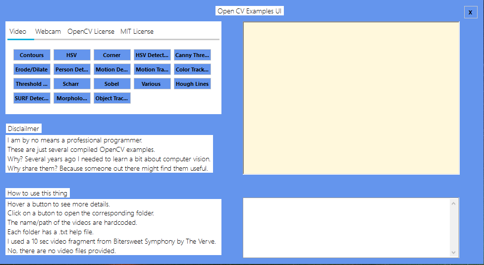
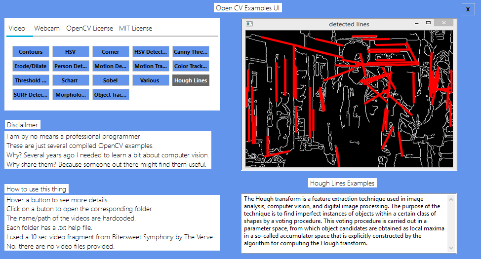

Just some compiled OpenCV Examples
Useful links:
A litle piece of software that will help you set up virtual webcam feeds.
Just a repository containing several compiled OpenCV examples.
Bonus: It has a simple (and rather ugly) UI that will help you find the right example.
Several years ago I found myself in need of learning a bit about computer vision.
And, as it can be seen bellow, this was the result. It's not nice, but it worked for me.


| name | what | more info |
|---|---|---|
| Detection | Canny Algorithm | |
| Colospaces | HSV | |
| Detection | Harris Corner Detection | |
| Morphology | Erosion | |
| Morphology | Dilation | |
| Detection | Pedestrian detection | |
| Filters | Sobel Derivatives | |
| Transform | Hough transform | |
| Detection | Speeded up robust features | |
| Object Detection/Tracking | Introduction |